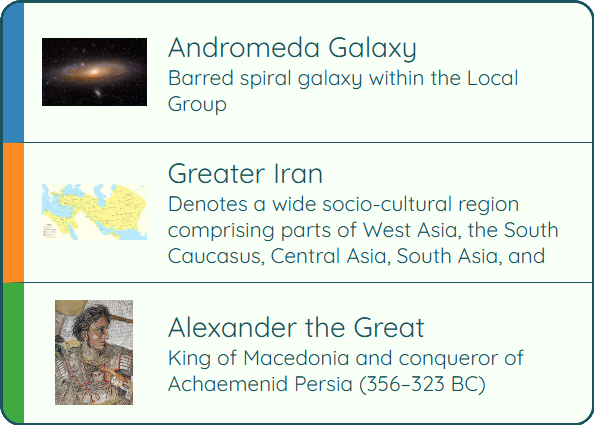
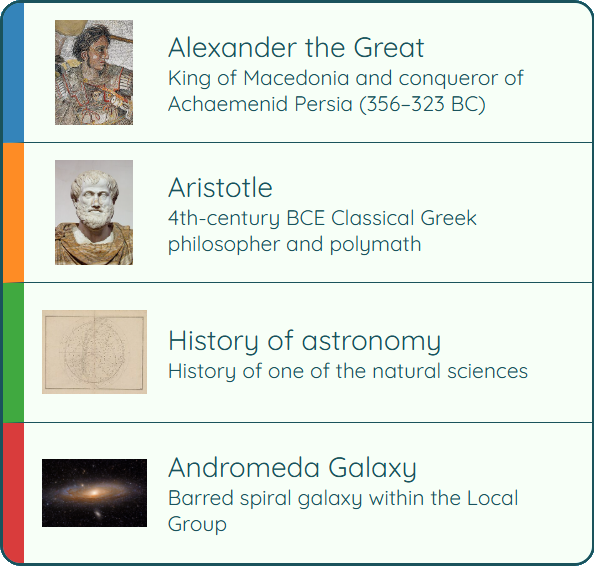

Wikipedia Wikiracer
Python
Graph Algorithms
Algorithm Engineering
Asynchronous Processing
Web Crawling
Performance Optimization
Testing & Validation
This project implements the Wikiracer game, a navigation challenge based on Wikipedia.
Wikiracing is a game in which players attempt to move from one Wikipedia article to another using only internal
Wikipedia links. All allowed links follow the format /wiki/Page_Name, ensuring that navigation stays
strictly within Wikipedia.
In this project, we are given two Wikipedia articles: a start page and a goal page. The task is to reach the goal page starting from the source page by clicking only the links found inside the articles we visit.
To solve this problem algorithmically, Wikipedia is modeled as a directed graph where Wikipedia pages are nodes and hyperlinks are edges between pages.
Page A links to Page B, and Page B links back to Page A.
Page A links to Page B, but Page B does not link back.
Page B links to Page A, but Page A does not link back.
Because hyperlinks are not guaranteed to be reciprocal, directionality plays a critical role in how graph search algorithms behave.
The main goal of the project is to find a path between two Wikipedia pages as efficiently as possible.
Efficiency is measured in two ways:
While traditional graph algorithms focus on minimizing clicks, the final Wikiracer implementation prioritizes minimizing page downloads, even if the resulting path contains more links. This reflects the real-world constraint that network requests are far more costly than local computation.
Have you ever wondered what the Andromeda Galaxy and Alexander the Great have in common?
There is one path with only 2 steps that allow us to reach Alexander the Great from Andromeda Galaxy. Surprisingly, there are also 114 different paths with 3 steps that allow us to do the opposite.
This example highlights how non-obvious connections emerge when navigating Wikipedia as a graph.


Visualized paths generated by sixdegreesofwikipedia.com
For more examples, visit sixdegreesofwikipedia.com .
The project is approached using three different algorithms: Breadth-First Search (BFS), Depth-First Search (DFS), and a Custom Asynchronous BFS Wikiracer. While BFS and DFS serve as foundational baselines for understanding graph traversal and path discovery, the third algorithm is the most critical component of the project.
Efficiency strategies used by the custom Wikiracer:
"The future depends on what you do today."
- Mahatma Gandhi